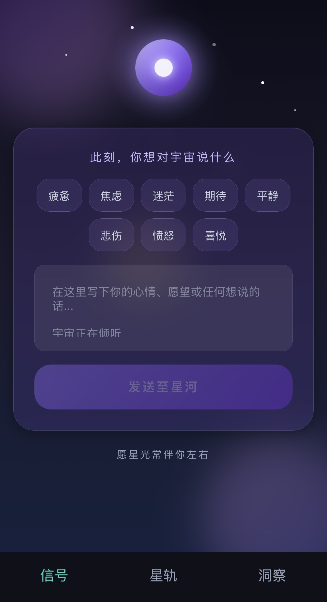
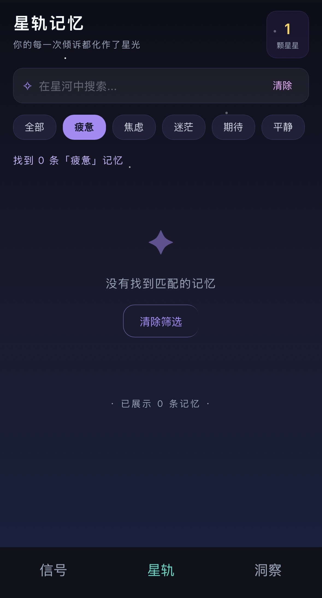
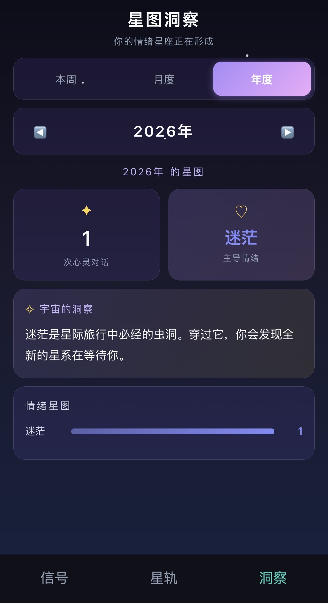

Product Thinking: End-to-End Ownership
This project demonstrates the full cycle of AI product ownership — not just feature design, but the thinking behind every decision: what problem it solves, who it serves, and how it feeds the AI layer.
Problem Definition
Identified a critical market gap: existing mood apps rely on clinical language that triggers stigma-avoidance in East Asian users, directly causing abandonment. Designed a culturally resonant, non-clinical alternative.
User Research
Defined the core segment: Chinese Gen Z under emotional pressure with no safe outlet. Chose WeChat Mini Program as a deliberate distribution decision — 1.3B+ built-in users, zero download friction, no separate account required.
AI System Design
Designed the 8-tag taxonomy as structured NLP pipeline input. The rule-based response library is explicitly architected as a replaceable module — identical interface contract whether powered by rules or an LLM.
Feature Prioritisation
Three modules — Signal, Star Track, Insight — mapped to Express → Remember → Reflect. Each addresses a distinct emotional need state and contributes a unique data layer to the AI pipeline.
Data Architecture
Structured schema — (tag, text, timestamp, userId) — simultaneously serves real-time UX responses, multi-granularity analytics, and labelled training data accumulation for future fine-tuned emotion models.
Build & Validate
Shipped a complete working Mini Program — all three modules, NLP response logic, cloud database, and multi-granularity analytics — validating the full product hypothesis end-to-end, not just the UI.
Project Overview
Most mood-tracking apps available to Chinese users rely on clinical framing — "mental health score", "symptom check-ins", "wellness metrics" — creating stigma and discouraging the very users who need them most. Cosmos Mood reframes the entire experience: rather than reporting data to a system, users speak to the universe.
Built natively as a WeChat Mini Program, it reaches China's 1.3B+ WeChat users with zero download friction.
User Pain Points & Product Opportunity
The product opportunity is grounded in four structural gaps in China's emotional wellbeing market — each representing a deliberate product decision, not merely a design preference.
Gap 1 — Stigma from Clinical Language
Medical framing ("depression score", "anxiety levels") activates stigma-avoidance behaviour in East Asian contexts — directly causing abandonment among the target demographic. Cosmos Mood eliminates clinical language entirely from its product vocabulary.
Gap 2 — High Distribution Friction
Standalone apps require separate downloads, new accounts, and onboarding — each a drop-off point. Embedding within WeChat removes all barriers simultaneously, converting 1.3B+ existing users into potential users with a single share link.
Gap 3 — Generic, Non-Contextual Responses
Existing journalling tools give no response or return generic affirmations regardless of context. This is the natural opportunity for LLM integration: contextual, emotion-aware, personalised responses that evolve with the user's history.
Gap 4 — No Longitudinal Emotional Memory
Most apps show today's mood but fail to build a longitudinal narrative. Users can't see emotional patterns or growth trajectories across months and years — a core unmet need that also represents the highest-value AI training data layer.
Three Core Modules: Express → Remember → Reflect
The three-module structure maps directly onto the user's core emotional journey and three distinct need states. Feature prioritisation followed this journey logic: no module was added without a clearly defined user need and a corresponding data contribution to the AI layer.
User need: safe, zero-judgment expression. AI role: NLP input layer — tag + free text converts raw emotion into classifiable, machine-readable data.
User need: access to and ownership of emotional memory. AI role: emotion corpus layer — a searchable archive that grows into a retrievable personal emotional dataset.
User need: pattern recognition over time. AI role: analytics layer — aggregates emotion data across time horizons; rule-based insights are the placeholder for future LLM-generated narratives.
App Screens

① Signal NLP Input Layer

② Star Track Emotion Database

③ Insight Analytics Layer
① Signal — NLP Input Layer Design
The Signal screen is the NLP input layer — where unstructured emotional experience is converted into structured, machine-readable data. The core design challenge: how do you consistently collect labelled emotional data without it feeling like data collection?
- 8-tag emotion taxonomy — a controlled vocabulary converting free-form emotion into classifiable NLP input, while remaining immediately intuitive
- Free-text field — open-ended input capturing emotional nuance beyond the tag; this text is the raw material for future NLP processing and LLM fine-tuning
- Cosmic metaphor as a data UX strategy — "Send to the Galaxy" replaces "Submit", reducing psychological resistance to consistent data entry without changing the underlying data model
- Immediate response feedback — the cosmic response closes the behavioural loop, rewarding each submission and driving the repeat usage that accumulates the longitudinal dataset
8-Tag Emotion Taxonomy
The 8 tags cover the primary emotional states most relevant to the target segment — mutually exclusive enough to produce clean classification data for the NLP pipeline, broad enough to cover the full range of everyday emotional experience.
② Star Track — Emotion Database & Memory Layer
The Star Track page is the user-facing view of the emotion database — full-text searchable, tag-filterable. It solves the retention problem: users who can browse and retrieve their emotional history have a reason to return beyond just recording new entries.
- Star counter — total entries displayed as '颗星星', gamifying accumulation and building a sense of personal ownership over the growing dataset
- Full-text search — keyword retrieval of emotional memories; simultaneously produces a searchable emotion corpus for future NLP analysis
- Tag filter row — single-tag filtering that doubles as an ad-hoc emotion frequency explorer, surfacing the user's own emotional patterns
- Empty state design — four-pointed star + '没有找到匹配的记忆' maintains cosmic tone and brand consistency even in edge cases
③ Insight — Analytics Layer & Pattern Recognition
The Insight page is the analytics layer — aggregating the emotion database into weekly, monthly, and annual patterns. It addresses a core product question: how do you make raw data meaningful to a non-analytical user? The answer: visualise it as a star chart and narrate it in cosmic language.
- Three time tabs (本周 / 月度 / 年度) — multi-granularity analytics covering short-term fluctuation, mid-term trends, and longitudinal emotional portraits
- Dominant emotion detection — highest-frequency tag per time window; the simplest operational form of the emotion classification pipeline output
- 宇宙的洞察 — rule-based personalised message matched to dominant emotion; explicitly designed as the placeholder for a future LLM-generated narrative layer
- 情绪星图 bar chart — frequency distribution of all 8 tags; the direct visual output of the emotion analytics pipeline
Three Analytics Dimensions
本周 — Short-Term Pattern Detection
Past 7-day snapshot — surfaces weekly emotional cycles (e.g. Monday anxiety, weekend calm). Most relevant granularity for daily product engagement loops.
月度 — Mid-Term Trend Analysis
Month-level view of week-by-week shifts. Dominant emotion feeds the 宇宙的洞察 message — the current rule-based personalisation layer and the future LLM summarisation target.
年度 — Longitudinal Emotional Portrait
Full-year emotion data aggregated into a complete portrait: year navigator, total entry count, dominant emotion, personalised cosmic insight, and the full 情绪星图 distribution. Across multiple years, this becomes a longitudinal emotional dataset — the highest-value layer for AI model training, personalisation, and future predictive features.
User Flow
The user flow maps directly onto the underlying data pipeline — each step simultaneously serves the user's immediate emotional need and produces structured data that feeds the AI layer. This dual-purpose design is intentional: user value and data value are not in tension — they are the same action.
→ 分类标签
→ NLP 语料
→ 回应生成
→ 留存循环
→ 个性化洞察
Design Philosophy: Three Core Product Decisions
Decision 1 — Cosmic Language over Clinical Language
Clinical language ("mental health score", "symptom check-in") activates stigma-avoidance behaviour in Chinese Gen Z, causing abandonment before any data is collected. Replacing it with cosmic metaphor — 星光, 心灵对话, 星轨 — reframes the identical data-collection behaviour as a personal, poetic practice. The product architecture is unchanged; the psychological barrier is eliminated.
Decision 2 — Universe as Listener, Not Algorithm
Users in East Asian cultural contexts are more likely to disclose emotionally when the perceived recipient feels vast, anonymous, and non-judgmental — rather than human, institutional, or algorithmic. "Speak to the universe" is not a brand choice; it is a UX strategy for maximising emotional disclosure, producing higher-quality, more honest input data for the NLP layer.
Decision 3 — Memories as Stars, Not Records
The star counter ('X颗星星') is a gamification mechanic reframing data accumulation as personally meaningful. Users who feel genuine ownership and emotional connection to their data are significantly more likely to continue contributing — directly solving the cold-start problem for the longitudinal dataset required to power future AI personalisation and predictive features.
Technical Stack
Built natively as a WeChat Mini Program — leveraging WeChat's built-in cloud infrastructure for zero-server-setup data storage, seamless user authentication, and instant access for 1.3B+ users. Every technical decision serves the product and AI strategy, not the other way around.
WXML / WXSS / JavaScript
WeChat's native stack (equivalent to HTML / CSS / JS). Builds the three-module UI and handles all interaction logic: tag selection, free-text input, search and filter, and chart rendering.
WeChat Cloud Database
Stores entries as structured documents: { tag, text, timestamp, userId }. User-scoped by default — no custom server or auth infrastructure required. This schema is simultaneously the production data store and the foundation for the future AI training dataset.
NLP Response Logic (JavaScript)
Current: tag-keyed curated response library. Explicitly architected as a replaceable module — the interface contract (input: tag + text → output: response string) is identical whether the engine is rule-based or LLM-powered. Upgrading to LLM requires only swapping the engine, not redesigning the system.
Analytics Engine (JavaScript)
Aggregation logic for weekly / monthly / annual views: filters by time window, counts tag frequencies, detects dominant emotion, triggers 宇宙的洞察. The dominant-emotion detection is the simplest operational form of the emotion classification pipeline — a working example of AI output in the current product.
Outcomes
Successfully launched a fully functional WeChat Mini Program with a complete user journey from emotional expression to personalised insight — demonstrating end-to-end product ownership and technical execution.
- Problem definition & market sizing: identified clinical language stigma as the core drop-off driver in China's mood app market; quantified addressable reach via WeChat's 1.3B+ user base
- AI system design: designed the 8-tag taxonomy as a structured NLP input layer; architected the rule-based response system as an explicitly replaceable LLM module with identical interface contract
- Data architecture for AI: designed the (tag + text + timestamp + userId) schema to simultaneously serve real-time UX, multi-granularity analytics, and future model training — one schema, three distinct use cases
- Feature prioritisation: three-module structure mapped directly to express → remember → reflect; every feature justified by a distinct user need state and a corresponding AI data contribution
- Distribution strategy: WeChat Mini Program selected as a deliberate product decision — zero-friction access to 1.3B+ users, no download, no separate account — not simply a technical implementation choice
- Full-stack delivery: shipped a complete, working product with NLP response logic, cloud database, and multi-granularity analytics — demonstrating end-to-end ownership from hypothesis to working software